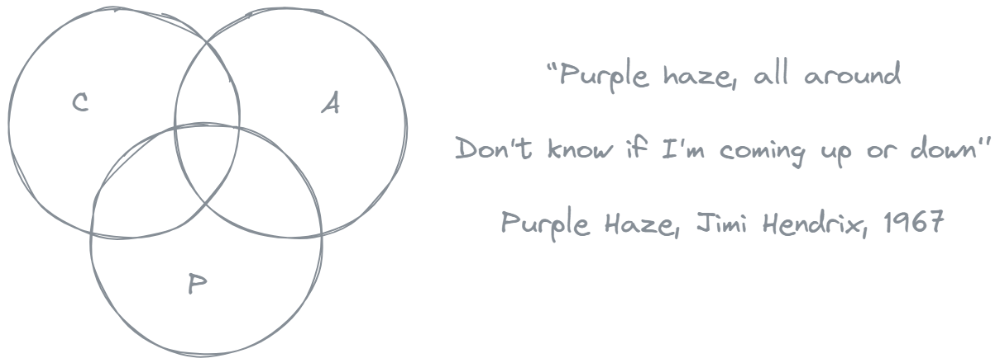
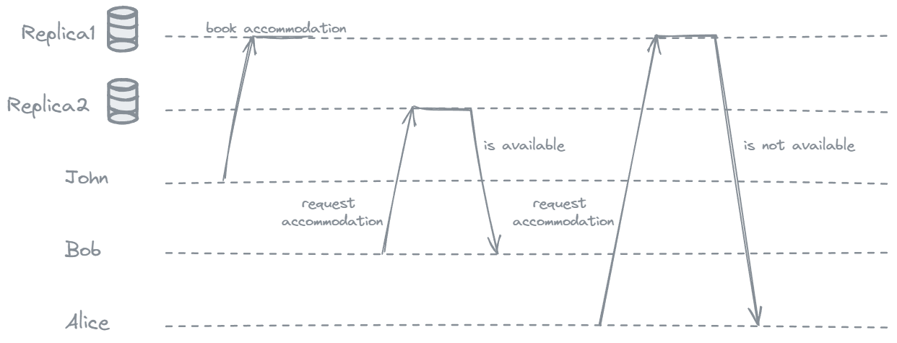
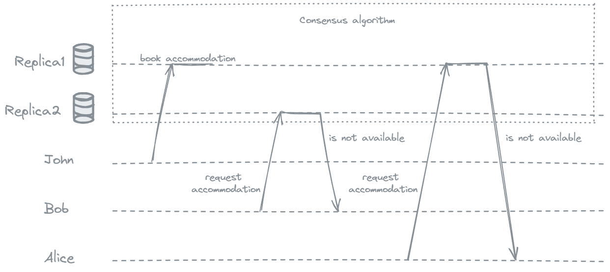
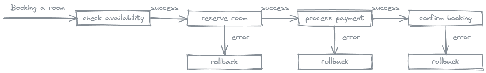

Confusing Consistency: CAP vs ACID

Effective communication requires getting definitions right. Very often the same word can have different meanings and lead to confusion. Good example of that would be term Consistency. In this article we will take a look at consistency in CAP and ACID and differences between them.
Let’s start with defining CAP and ACID.
CAP theorem is formulated by computer scientist Eric Brewer in 2000, and states that a distributed data store cannot simultaneously provide more than two out of the following three guarantees:
Consistency (C): Every read receives the most recent write or an error. In a consistent system, all nodes in the system have the same data view at any given point in time.
Availability (A): Every request is guaranteed to receive a response, without the guarantee that it contains the most recent version of the information.
Partition Tolerance (P): The system continues to operate despite network partitions that may cause communication failures between nodes.
ACID represents a set of properties that guarantee the reliability and correctness of transactions in database systems.
Atomicity (A): Ensures that a transaction is treated as a single, indivisible unit of work.
Consistency (C): Ensures that a transaction brings the database from one valid state to another.
Isolation (I): Ensures that multiple transactions can execute concurrently without interfering with each other.
Durability (D): Guarantees that once a transaction is committed, its changes are permanent and will survive subsequent failures, such as system crashes or power outages.
So, in the CAP theorem, the word consistency is used in the meaning of linearizability. And in the context of ACID, consistency refers to an application-specific notion of the database being in a “good state.” Let’s dive deeper in each oh them.
What is linearizability?
Linearizability (also known as atomic consistency, strong consistency, immediate consistency, or external consistency) is a recency guarantee on reads and writes of an individual object. It is a strong consistency model. So if you ask different replicas the same question, you will receive the same answer.
Let’s take a look at nonlinearizable system example:

- Friends Bob and Alice discuss going on vacation and book accommodation.
- During their discussion John books the accommodation that Bob and Alice were looking at.
- When Bob refreshes the page, he sees that it is still available because he reads from the other replica that has not been updated yet.
- Alice after the refresh sees that accommodation is not available because she reads from the first replica that has the most recent update.
The fact that Bob’s query returned a stale state is an example of linearizability violation.
Next image will show the same scenario on linearizable system:

In linearizable system once a new value has been written, all subsequent reads see the value that was written, until it is overwritten again. This means that the system acts as if there is only one replica.
ACID Consistency is nothing that database can fully guarantee (except some uniqueness constraints, etc.). It’s the application’s responsibility to define its transactions correctly so that they preserve consistency. In most cases if you write bad data, the database can not stop you.
Let’s take a look at ACID consistency compliance example:

Each step is successfully completed before moving to the next, ensuring database consistency throughout the transaction. If any step fails, the transaction is rolled back, maintaining the consistency of the database.
If the payment processing will fail and the system doesn’t roll back the initial reservation it will lead to inconsistency in the database.
So, CAP Consistency means linearizability and ACID Consistency is application’s responsibility and nothing that database can guarantee. It’s unfortunate that the same word is used with many meanings. We took a look at only 2 examples and there are also eventual consistency and consistent hashing. This is why having precise and clear definitions is crucial especially when the term is overloaded. Martin Kleppman did amazing job in untangling many os these terms.
Sources: